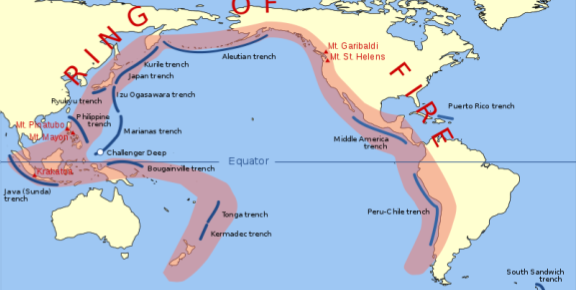

The Ring of Fire
The many volcanoes and earthquakes along the Ring of Fire are caused by the amount of movement of tectonic plates in the area.
Along the Ring of Fire, plates overlap.
The magma near Earth’s surface creates volcanic activity.
The border between the Pacific and North American Plates (Phenomenon image) is a transform boundary, where plates move sideways past one another.
This type of boundary generates a large number of earthquakes as tension in Earth’s crust builds up and is released.
Plates can also move away from each other within a continent.
This is called continental rifting.
When this happens, the crust thins, breaks, and then splits apart.
